Part II 的最后一课，也是全书语法陷阱最隐蔽的一课。I wonder if… 后面必须用陈述语序（if you are free），不能倒装成 if are you free —— 这一点几乎人人都会错。另一个难点是它根本不是问句：字面意思是「我在想……」，实际功能是非常客气地提出请求或试探。所以回答时不能只说 Yes / No，那不是它期待的东西。
课本 p.86–87
10 个问题 + 1 个例题
陈述语序
01先把回答的骨架搭好
I wonder if… 是一句礼貌的邀请，不是诘问。回答的三步：先回应「可以／不可以／看情况」，再补具体信息，最后把话头交回去 —— 这才配得上它的客气。
先回应 — 用回答 request 的方式Yes, that's fine. / Actually, not this weekend. / It depends which part.
再补具体信息 — 时间、条件、你的情况I'm free on Sunday afternoon, but Saturday I'm at a conference.
把话头交回去 — 因为对方是在试探What did you have in mind?
对方说 I wonder if…，你就该听出「他可能不好意思直说」。
所以最好的回答往往包含一个提问：What were you thinking? / Did you want to do something?
你把球踢回去，对方才敢说真正的请求。这一来一回，就是这个句型存在的意义。
02陈述语序 + 三种功能
这一课只有一个语法点，但它是硬伤级的；另外要分清这个句型的三种用途，因为回答方式完全不同。
A · 陈述语序：if 后面绝不倒装
结构
例句
✓ 对
I wonder if + 主语 + 动词
I wonder if you are free. / I wonder if he has a plan.
✗ 错
I wonder if + 助动词 + 主语
I wonder if are you free. / I wonder if does he have a plan.
为什么容易错？因为中文的「你」永远在前面。
中文说「我想知道你是不是有空」，语序和陈述句一样；英语的直接疑问句 Are you free? 要倒装，而 I wonder if 把整个问句变回了陈述句。
记法：I wonder if 后面的部分，当成一句话陈述出来，而不是提问。
同理：Do you know if… / Could you tell me whether… 后面也一律陈述语序。
B · 三种功能，回答方式不同
功能
课本题号
对方其实在说什么
你怎么回
礼貌地请求 / 提议
1, 2, 4, 8
「你有空吗」「你能帮我吗」—— 想说但不好直说
回应请求 + 反问要做什么
客气地探问私事
3, 5, 6, 7, 9, 10
「我想多了解你一点」—— 可能是课程练习，也可能是真的好奇
如实回答 + 补一句真实的细节
自言自语式的推测
（口语中常见）
「我猜……但不确定」
给信息，或一起猜
C · 六个同义说法，语气从软到硬
最委婉
I wonder if you might…（加 might，最客气）
I was wondering if…（过去时让语气更软，非常常用）
I wonder if…（课本题型）
Would you mind if…（后面接过去式：if I opened the window）
Do you happen to…?
最直接
Are you free this weekend?（直接问句，倒装）
I was wondering if… 比 I wonder if… 更客气。
用过去时表达现在的想法，是英语里软化语气的经典手法（和 I wanted to ask、Did you want something? 一样）。
在真实对话里，这句比课本题型出现得多得多，值得单独记住。
03课本例题：先分类，再给结论
例题是 I wonder if you're interested in using an English-English dictionary.。注意课本给的答案没有直接答 yes 或 no，而是先把词典分了几类、每类的用途说清楚，最后才给出自己的偏好和理由。「先分类，再表态」，是回答这类问题的标准打法。
Example
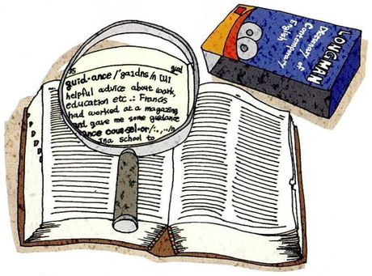
I wonder if you're interested in using an English-English dictionary.
What you seeAn open dictionary with a magnifying glass resting on the page, enlarging the entry for guidance, and a blue Longman dictionary propped up behind it.
What it means我想知道你有没有兴趣用英英词典。注意 English-English 指「用英语解释英语」，不是「英国英语」。
Say it like this"Well, there are all kinds of dictionaries with different purposes. A thesaurus, for instance, gives you synonyms but no definitions at all. Or you might need a French-English dictionary if you live in Paris and want to learn English, and an English-French one if you live in London and want to learn French. But those bilingual dictionaries usually have fairly small vocabularies and tend to be quite simple. So as an advanced learner — even though English isn't my native language — I prefer an English-English dictionary. There are more words in it and the explanations are fuller, so my proficiency actually improves."
这段里四个可以直接抄走的结构：
① There are all kinds of X with different purposes —— 先把话题拆成几类，显得有条理；
② For instance… —— 举例的标准开头，比 like 正式；
③ tend to be pretty simple —— tend to 是「往往」，让判断留有余地；
④ even though English isn't my native language —— 让步插入语，放在结论前，显出你在权衡。
「我的英语水平提高了」别说 my English level improves。level 是中式思维。英语说 my English improves，或者更地道：my proficiency improves（课本用的就是这个）。
同理，「我英语不好」是 my English isn't great，不是 my English level is low。
04十个问题：怎么答出层次
每张卡三段：What you see 照着图描述，What it means 说清这句的功能（请求还是探问），Say it like this 给三档答案：① 一句回应 / ② 加具体信息 / ③ 加反问或真实细节。第三档请换成你自己的真事。
01
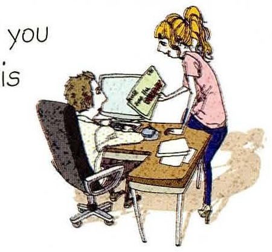
I wonder if you are free this weekend.
What you seeA woman standing over a desk, looking at a monitor, while a man sits beside her working at his own screen. An office, mid-week.
What it means我想知道你周末有没有空。这是礼貌的邀请，对方多半想约你，但不好意思直说。
Say it like this①Yes, actually — Saturday's clear. ②I'm free on Sunday, but Saturday I've got a deadline. What did you have in mind? ③Partly. I'm in the lab on Saturday morning and free after that — and on Sunday I'm completely useless before noon. So if it's something early, count me out; otherwise, what were you thinking? I'd rather know than guess and say yes to the wrong thing.
02
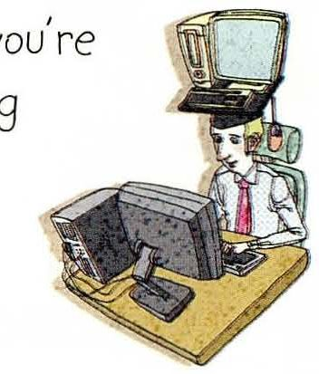
I wonder if you're good at fixing computers.
What you seeA man in a shirt and dark tie crouching next to a desk with two old computers on it, peering at one. Rolling up his sleeves, metaphorically.
What it means我想知道你修电脑在不在行。又是礼貌的请求 —— 对方大概率有台电脑坏了。
Say it like this①Reasonably, yes — what's wrong with it? ②I'm decent at software problems, useless with hardware. What's it doing? If it's a boot problem I can probably help. ③Good enough to have become the person everyone in my building asks, which is a mixed blessing. My honest advice is that half the time it's a loose cable or a full disk and I'm not doing anything clever. So tell me the symptom and I'll say whether it's worth my time or a repair shop's — I'd rather be honest than poke at it for an hour.
03
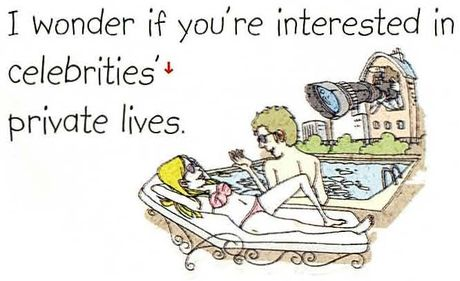
I wonder if you're interested in celebrities' private lives.
What you seeA woman reclining on a chaise longue reading, with a camera and a photographer set up beside her — the machinery of a celebrity photo shoot.
What it means我想知道你对名人的私生活有没有兴趣。课本脚注：celebrity = 名人，尤指娱乐圈的。这题可以大方说「没兴趣」，不必迎合。
Say it like this①Not really, honestly. ②Not much. I'm interested in their work and completely uninterested in their marriages — and I've noticed the second kind of news is much easier to find. ③Very little, and I'd add that it isn't a moral position. I don't think people who follow it are shallow; I just find it boring in the way that other people's holidays are boring. What does interest me is why the appetite is so large — there's clearly something being sold there that isn't information.
04
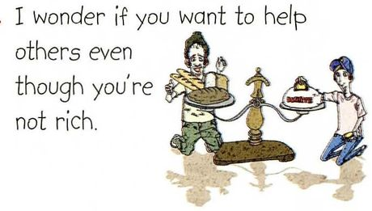
I wonder if you want to help others even though you're not rich.
What you seeTwo figures carrying trays of food toward each other — one thin in a sleeveless top, one in an apron. Offering what they have.
What it means我想知道你就算不富裕也想不想帮别人。even though 是让步：尽管不富裕。注意这里有个预设，可以先回应它。
Say it like this①Yes, I do — in my own way. ②Yes, but I'd rather give time than money at my stage. I'm a student, so money isn't the thing I have most of. ③Yes, and I'd push back slightly on the "even though" — as a student I'm not rich, but I'm not poor either, and in global terms I'm comfortable. So the honest version is that giving has never cost me much. What I've found is that time is the harder donation: I'll send money in thirty seconds and I'll avoid committing an afternoon for a month.
05
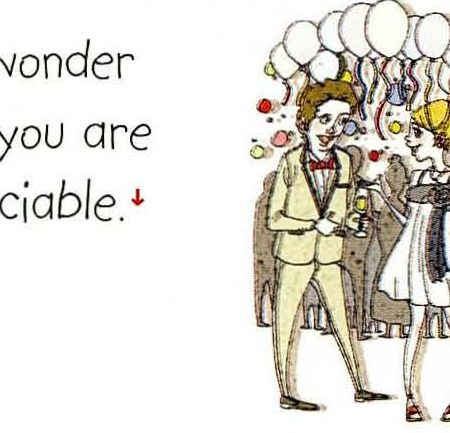
I wonder if you are sociable.
What you seeA crowd of people standing close together at a party, drinks in hand, balloons above them, everyone mid-conversation.
What it means我想知道你爱不爱交际。课本脚注：sociable = 友善、喜欢和别人在一起的。和 introverted 不是反义 —— 后者指能量来源，前者指表现。
Say it like this①Moderately — I'm better one to one. ②I'm sociable in small groups and terrible at parties. Given a table of four I'm fine; given a room of fifty I'll find the kitchen. ③I'd say sociable is the wrong word for me, and I used to worry about that. I like people and I need them, but a large gathering drains me in a way that a two-hour dinner doesn't. So I'm sociable in the sense that matters — I'll remember your news and ask about it — and unsociable in the sense of not enjoying the room.
06
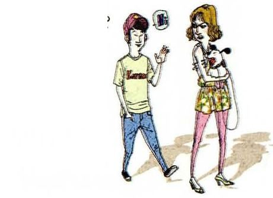
I wonder if you have any prejudice against foreigners.
What you seeA young man in a printed t-shirt gesturing as he speaks to a woman in a patterned top who's holding a small dog. An ordinary street conversation.
What it means我想知道你对有没有对外国人有偏见。课本脚注：prejudice = 在了解事实之前就形成的不公正判断。这题严肃，回答不要打哈哈。
Say it like this①I'd like to think not, though nobody can be sure of themselves. ②I don't think I have prejudice, but I'd distinguish that from having assumptions. I grew up in a city with almost no foreigners, so I definitely had assumptions — and most of them turned out to be wrong the first time I actually talked to someone. ③I'd answer carefully, because "no prejudice" is easy to claim and hard to verify. What I can tell you is what changed my own: I was the foreigner for the first time at a conference, and I spent three days being talked over and mispronounced. Nothing hostile happened, and I still came home exhausted. That's the most useful thing I know about the subject — it's mostly not about hatred, it's about how tiring it is to be the one who's slightly outside.
07
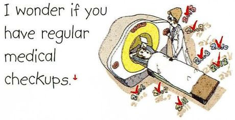
I wonder if you have regular medical checkups.
What you seeA man lying on a sliding bed going into a large white scanner, a doctor standing beside the machine with a clipboard.
What it means我想知道你定不定期体检。课本脚注：checkup = 医生做的、确认你健康的检查。
Say it like this①Once a year, since my university started offering them. ②Annually, because it's free through the university — I'm not sure I'd go if I had to pay and remember. The results have been boring so far, which is the point. ③Once a year, and I'll admit I only started at twenty-three when a friend was diagnosed with something that a checkup would have caught earlier. Before that I thought of it as something middle-aged people did. What I've noticed since is that the whole value is in the boring years — the year it's fine is what buys you the confidence to ignore a small worry.
08
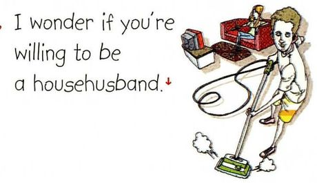
I wonder if you're willing to be a househusband.
What you seeA man in an apron pushing a vacuum cleaner across the floor, with a small child nearby and toys scattered around. Domestic work, unhurried.
What it means我想知道你愿不愿意当全职家庭主夫。课本脚注：househusband = 留在家做家务、带孩子、配偶外出工作的男性。这题值得认真答——它自带性别预设。
Say it like this①Yes, in principle — I'd want it to be a decision, not a default. ②I'd be willing, yes, if it made sense for both of us. What I'd want is for it to be a choice we made together rather than something that happened to me. ③Yes, and I've thought about it, which is unusual for a man of my age in my family. The reason I'd be willing is that I'd rather raise my own children than pay somebody to do it — and I'd be honest that I'd find it hard. What I question is the framing: nobody asks a woman whether she's "willing" to be a housewife, as if the alternative needed justifying. So my answer is yes, on the condition that we'd talk about it every year rather than once.
09
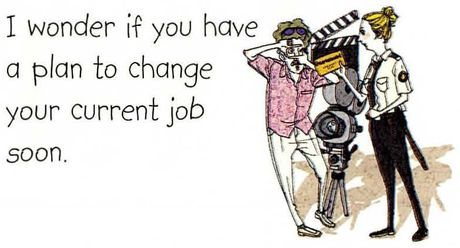
I wonder if you have a plan to change your current job soon.
What you seeTwo men standing beside a large professional film camera on a tripod, one in a light jacket, one in a dark shirt. A production crew on location.
What it means我想知道你近期有没有换工作的打算。如果还在读书，先说明这一点，再把问题重新框定。
Say it like this①Not soon — I'm still finishing my degree. ②I'm still a student, so "changing jobs" doesn't quite apply. But I am thinking about what comes after — I'm applying for postdocs, which is a version of the same question. ③No job to change yet — I'm finishing a PhD next year, so the real question is where I go afterwards. What I've noticed is that "a plan" is doing a lot of work in that sentence: I have a direction, and no plan. I'd like to stay in research somewhere that has the equipment for my project, and I'm deliberately not narrowing it further until I know who's hiring.
10
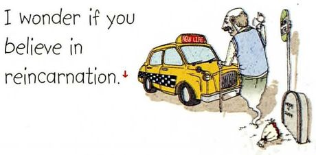
I wonder if you believe in reincarnation.
What you seeA man standing on a pavement beside a yellow taxi, looking down at a small dog, with a lamp post behind him. An ordinary street scene, waiting.
What it means我想知道你信不信转世。课本脚注：reincarnation = 死后以另一个人、动物或物的形式再生的信仰。这题问的是信仰，回答要以「我如何看待」为主，不要评判别人。
Say it like this①Not literally, no — but I understand why people do. ②I don't believe in it as a fact. What I find interesting is that the idea is so widespread — it shows up in completely unrelated cultures, which tells you something about what people want from death. ③Not in a literal sense, and I'd add that I don't think belief is the interesting part. My grandmother did believe it, and I watched how it changed her behaviour rather than her opinions: she was much less afraid, and much more careful with animals. So I'd say I don't share the belief, and I'd be lying if I said I didn't envy what it did for her.
05重点词汇（美式音标）
课首页脚注给了 8 个词，都是这一课专属的抽象词。第三列是它们在句子里的样子。
A · 课本脚注的 8 个词
词
音标
课上怎么用
中文
thesaurus
/θɪˈsɔːrəs/
a thesaurus gives synonyms but no definitions 同义词词典。注意开头是 th
Because it gives the other person a way out. If I ask "are you free this weekend" and you're not, you have to say no to me. If I say "I wonder if you're free", you can answer the wondering instead of the invitation — you can say "not this weekend, but next" without it being a refusal. It's not politeness for its own sake; it's building in an exit.
building in an exit（预留一个出口）是对这个句型最本质的解释，比说「这样更礼貌」深刻得多。这个洞察老师会记住。
Why do learners get the word order wrong?
Because the direct question has inversion and this one doesn't, and the two are one word apart in meaning. "Are you free?" is inverted; "I wonder if you are free" isn't. In Chinese neither is inverted, so the English inversion is the thing that has to be added — and once you've learned to add it for questions, you keep adding it here, where it's wrong. I still catch myself doing it when I'm speaking fast.
Which of these ten would you find hardest to answer if a stranger asked?
The househusband one, and the prejudice one. Not because of the content — because both ask me to declare something about myself that I can't verify. I can tell you what I believe, but not what I'd actually do at forty with a child and a mortgage. That gap is where I'd be careful, and I'd say so rather than give a confident answer.
区分「我知道自己信什么」和「我不知道自己会怎么做」，是很少见的诚实。最后一句 I'd say so rather than give a confident answer 正是分寸感本身。
Is "I wonder if" ever rude?
It can be, in the wrong tone. Said slowly with a falling tone it can sound like "I very much doubt it" — as in, "I wonder if that's actually true." So the phrase itself is neutral and the intonation decides. Which is a good reminder that politeness in English lives in the melody more than the words.
Do you think Chinese people are less direct than English speakers?
I'd question that, actually. Chinese has plenty of directness — it's just directness in different places. What I've noticed is that English puts the indirectness in the grammar, in things like "I wonder if" and "would you mind", while Chinese puts it in the relationship and the tone. So both are indirect; one is indirect on the page and the other is indirect in the room.
indirect on the page vs indirect in the room —— 这个对比很漂亮，而且它没有落入「中国人含蓄、外国人直接」的老套说法，反而提出了更有解释力的框架。
How would you ask a teacher something embarrassing, using this pattern?
I'd use "I was wondering if" and put the awkward part at the end. Something like: "I was wondering if you could help me with something — I think I made a mistake in the submission and I don't know how bad it is." The pattern buys you a sentence to breathe. What I wouldn't do is stack two softeners, like "I was just sort of wondering if maybe" — that reads as frightened rather than polite.
指出「委婉不能叠加」是很实用的提醒。that reads as frightened rather than polite 精确描述了一个常见但很少被指出的问题。
07这节课最容易犯的错
这一课的错误极其集中：几乎全是 if 后面的倒装。另外还有几个中式搭配。
✗I wonder if are you free this weekend. ✓I wonder if you are free this weekend.
本课头号错误。I wonder if 后面用陈述语序，不倒装。同理 Do you know if… 也不倒装。
✗I wonder if does he have a plan. ✓I wonder if he has a plan.
不要用助动词 does。陈述句里第三人称单数直接加 s：has。
✗I wonder if you are good at fix computers. ✓I wonder if you're good at fixing computers.
be good at 后面接动名词 -ing。这一课第 2 题原文就是这个搭配。
✗I have prejudice to foreigners. ✓I have a prejudice against foreigners.
prejudice 是可数名词，要加 a；介词用 against，不是 to。
✗My English level improves. ✓My English improves. / My proficiency improves.
level 是中式思维。英语直接用 improve 加语言，或者用课本里的 proficiency。
✗I am willing to be a househusband, but my wife doesn't allow. ✓I'd be willing to be a househusband, but my wife wouldn't agree to it.
allow 后面必须带宾语：allow it。而且表达「意愿」用 would be willing 比 am willing 更自然。
✗I go to checkup every year. ✓I get a checkup every year. / I have an annual checkup.
体检用 have / get a checkup，不用 go to。这是固定搭配。
✗I wonder if you are free this weekend? — Yes. ✓Saturday's clear — what did you have in mind? 只说 Yes 就把它当成了问句。它是邀请，回应里最好带上信息或反问，否则对话会僵住。
08五十分钟怎么用
这一课只有 10 道题，所以时间够把每道题都讲透。重点放在语序和语气上。
课前 10 分钟：只练第 02 节 A 表的语序把课本 10 句抄一遍，每句都检查 if 后面是不是陈述语序。这一课的语法风险全在这里。
再记住 I was wondering if真实对话里这句比课本的 I wonder if 出现得多得多，而且更客气。学会它，你在生活里立刻能用。
上课时：每道题都反问一句What did you have in mind? / Why do you ask? 这个句型本来就是给对方留出口的，你也应该留一个。
课后：用第 06 节的第一个问题自测Why say "I wonder if" instead of asking directly? 能答出「这是给对方的出口」，说明你理解的是功能而不是形式。